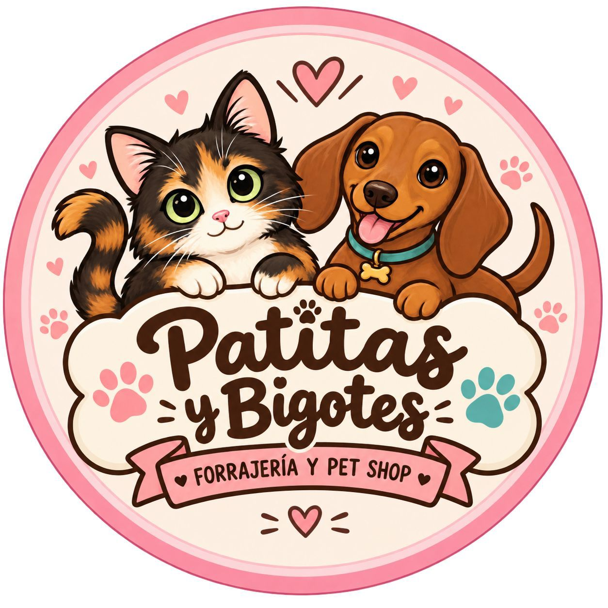

Mascotas
Encontrá veterinarias de guardia, pet shops, peluquerías caninas y alimento balanceado.
Buscar negocio
Cuidá a tu mejor amigo con los mejores profesionales.
Servicios y tiendas para mascotas

¿Tenés un pet shop o clínica veterinaria?
Publicalo en Nidox y hacé que más personas descubran tu negocio todos los días.